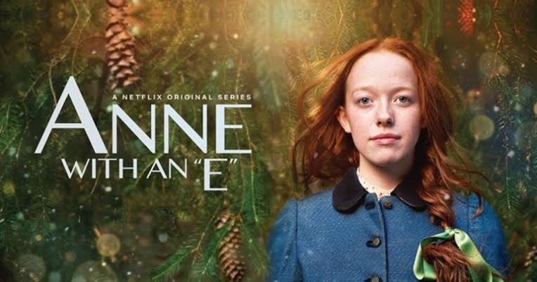

Quem é Anne Shirley Cuthbert?? A personagem foi criada por Lucy Maud Montgomery no livro Anne of green gables e tornou-se uma das figuras mais amadas da literatura. Sua história inspira leitores e espectadores por transmitir valores como amizade, empatia, perseverança e a importância da fidelidade própria. Após a fama dos livros, a narrativa foi transformada em uma série amada por muitos, Anne with an 'E'.
Ela é uma órfã de 13 anos conhecida por sua inteligência e imaginação extraordinára. Após uma infância tempestuosa, passando por diversos lares adotivos onde era explorada, a garota foi perfilhada por Matthew e Marilla Cuthbert, dois irmãos residentes da fazenda Green Gables. Apesar de ser um engano, a garota conquistou os Cuthbert's, continuando com eles. Ao longo da história, a menina enfrenta diversas aventuras, dificuldades, um romance complicado com seu querido amigo Gilbert Blythe e uma grande amizade com sua irmã de alma, Diana Barry. Anne se destaca por sua curiosidade e determinação, além de possuir uma forte opinião e senso de justiça, querendo sempre fazer o bem, às vezes sem pensar nas consequências, transformando a sua dor em solidariedade e empatia para ajudar as pessoas ao seu redor. Por fim, a série como um todo aborda muito mais do que apenas a história de uma órfã, expondo e discutindo sobre temas como pertencimento, mostrando como Anne, mesmo sendo adotada criou laços com seus tutores; a suma importância da amizade, educação e crescimento pessoal. Além disso, também trata de assuntos como o preconceito, racismo e desigualdade, incentivando de forma leve e criativa o respeito mútuo entre classes e luta por uma sociedade mais justa. Anne with an 'E' A série foi lançada mundialmente em 12 de maio de 2017 na netflix(aplicativo de streamig),após ter sua estreia original em 19 de março de 2017. O seriado se passa em uma cidade fictícia, chamada Avonlea, cuja história original se passa na Ilha do Principe Eduardo, no Canadá. A primeira temporada foi ambientada em 1896, a segunda em 1897 e a terceira em 1899. A trama envolve os adolescentes de Avonlea, tendo maior parte coletiva em abiente escolar. Além disso, ocorre em ambiente rural, pois todos moram em fazendas vizinhas, cada um com seus plantíos. Anne foi uma garota